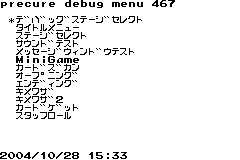

Futari wa Pretty Cure - Arienaai! Yume no Sono wa Daimeikyuu (Japan)
EEPROM 4K Save Format Spec gbakit Built-In Debug Menu Patch 💾 MultiBoot
Cartridge Identity
- Game Code
BFPJ(FamilyBFP)- Header Title
PURIYUMESONO- Maker / Revision
B2/ rev0- ROM Size
- 4.0 MiB (4,194,304 B)
- Save Media
EEPROM 4K- SHA-256
d11a800f7730d559987f9ac2b6eb7125324fbf2877d29d56fc8d65f761cddf74- Engine / SDK Group
comm-001(196 families)
Screenshots


Debug Menu Re-Enablement Patch (.ips)
Download BFPJ-debug.ips (17 B IPS / 4 B delta)
- Hook Mechanism
scene_descriptor_ptr_redirect· Patch initial scene descriptor literal at 0x08003d70 (0x0802ac3c -> 0x0802a714) to boot precure debug menu- IPS SHA-256
8750299b18d2e25f52778354effe73cd645a6467fc3492ae7ce6549995295ac7
gbakit patch apply BFPJ-debug.ips original.gba patched-debug.gba

Link Cable & Multiplayer Communications
This title contains detected communication capabilities: 💾 MultiBoot.
Detailed protocol specifications, SIO registers, Joybus commands, and MultiBoot sequences are documented in the Link & Multiplayer Reference.
- Single-Cart MultiBoot
- Single-Cartridge MultiBoot (Download Play) client/server handler · Thumb SWI 0x25 (
0xDF25):0x1c1f16,0x1c1f32
Battery Save Format Specification
Open Full Save Format SpecDownload save-format.json
- Specification Coverage
- 4 mapped fields · 0 verified checksum(s) · Confidence: HIGH
- gbakit Built-In Support
- Built-in (BFPJ)
gbakit save verify BFPJ save.sav
gbakit save decode BFPJ save.sav
gbakit save fix BFPJ damaged.sav -o repaired.savObserved Battery Save Layout
- Fill Byte & Active Size
0xFFfill · 66–66 / 512 B active (entropy 1.47 bits/B)- Active Offset Ranges
0x0–0x1F,0x27,0x88–0xA7,0xAF(4 total)- ASCII Magic / Headers
RCRP- Observed Variable Regions
- 0 bytes across 0 spans: None
- Candidate Checksum/Counter Spans
- None
ROM Assets, Compression & Audio
- BIOS Compression
- LZ77 (
0x10): 806 streams · RLE (0x30): 0 streams - ROM Pointer Tables
- 48 tables (10 pointing to validated compressed streams)
- SDK Backup Tags
EEPROM_V124,EEPROM_V124
Asset Map (formatkit.asset-map.v1)
Download BFPJ-r0-d11a800f7730d559.asset-map.json.gz (8,679 B (8.5 KiB)) Verified PASS · 94.57% coverage
| Metric | Bytes / Value | Entries |
|---|---|---|
| Identified | 3,966,668 B (3.78 MiB) (94.57%) | 64 |
| Mapped | 0 B (0.00%) | 0 |
| Opaque | 0 B (0.00%) | 0 |
| Unknown | 227,636 B (222.3 KiB) (5.43%) | 60 |
| Total ROM Size | 4,194,304 B (4.00 MiB) | 124 |
| Coverage % | 94.57% | — |
| Entries w/ Code Refs | 65 / 124 (52.42%) | — |
Top Identified Formats: audio.m4a-wavedata (1 · 3,953,716 B (3.77 MiB)) · gfx.gba-palette (61 · 12,032 B (11.8 KiB)) · audio.m4a-song-table (1 · 728 B) · gba.rom-header (1 · 192 B)
Largest unknown Extents (Headerless / Custom Asset Candidates)
| Offset | Size | Shannon Entropy | Code Refs |
|---|---|---|---|
0x00015530 | 52,152 B (50.9 KiB) | 6.754 bits/B | 0 |
0x0000B000 | 42,256 B (41.3 KiB) | 6.678 bits/B | 0 |
0x00003108 | 32,320 B (31.6 KiB) | 6.621 bits/B | 0 |
0x00032EE0 | 29,224 B (28.5 KiB) | 1.906 bits/B | 0 |
0x00022108 | 24,768 B (24.2 KiB) | 6.636 bits/B | 0 |
gzip -dk BFPJ-r0-d11a800f7730d559.asset-map.json.gz && gbakit map verify rom.gba BFPJ-r0-d11a800f7730d559.asset-map.json
gbakit assets export rom.gba --asset-map BFPJ-r0-d11a800f7730d559.asset-map.json -o out/Text, Fonts & Scene Data
- Primary Text Encoding
- LZ77-compressed ASCII (
6ASCII strings ·5LZ77 ASCII blocks) - Font & VWF Indicators
- VWF Width Table 1bpp Font · BIOS SWIs: BitUnPack
0x10:21· LZ770x11/12:95· Huffman0x13:7· RLE0x14/15:13 - Scene & Packaging
16ROM pointer tables (≥32 entries,2≥200) ·0relativeu32TOCs ·103OAM metasprite hits